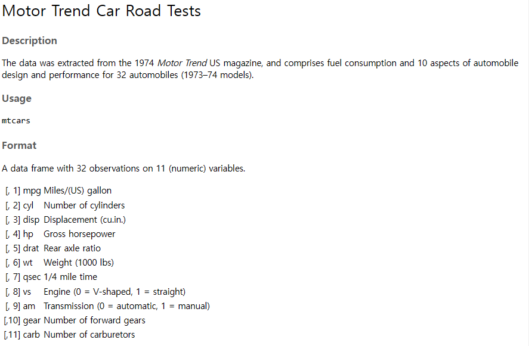
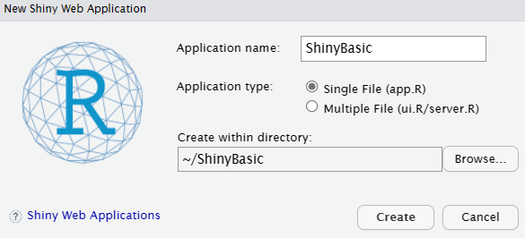
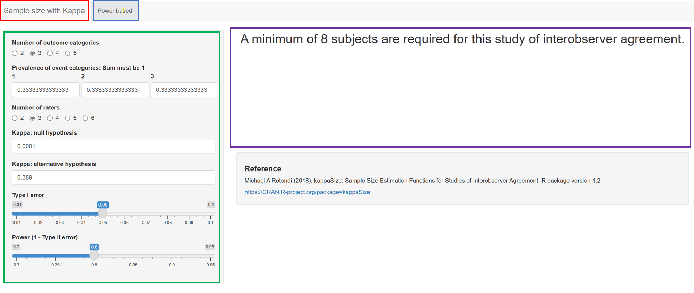
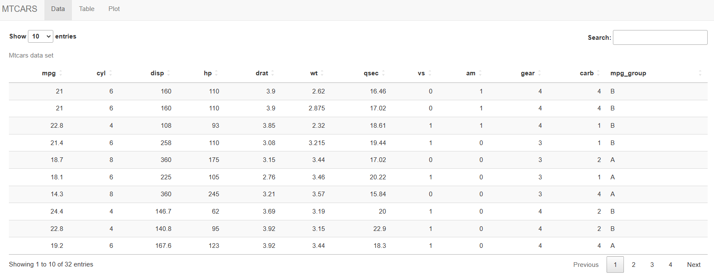
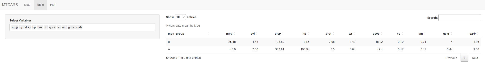
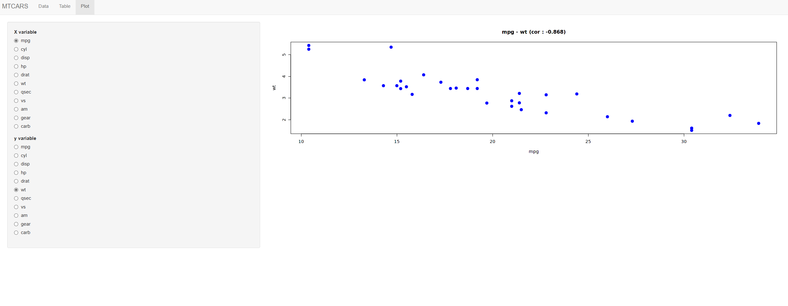

?mtcarsShiny Basic
Shiny Basic
📍참조 페이지 : 차라투 홈페이지 Shiny 강의
📍 R data.table 기반으로 작성된 예제이므로 R data.table 미리 참조 바랍니다.
더 자세한 내용은 📕 Mastering Shiny 참조 바랍니다.
1. Shiny란?
R package로서 R에서 바로 Interactive한 Wep app 제작이 가능합니다.
“Interactive한 Wep app” 이란?
사용자의 요청에 따라 다른 페이지를 보여주는 Web 실행 기반 프로그램
ex) 통계 샘플 수 계산기 : Sample size with Kappa (openstat.ai)
R Shiny를 통해 HTML / CSS / JS에 대한 지식이 없어도 R만 활용할 수 있다면 반응형 Web Application을 생성 가능합니다.
2. Shiny 구성
Shiny는 일반 Software와 비슷하게 UI와 Server로 구성되어 있습니다
UI
사용자에게 보여지는 화면을 구축하는 부분입니다. 사용자가 데이터 업로드, 범위 설정, 숫자 및 문자 입력 등등 여러가지 작업을 할 수 있도록 Option을 제공해줍니다.
Server
App의 작동 알고리즘을 짜는 부분입니다. 사용자의 요청에 따라 App이 보여줘야 하는 화면에 대한 Logic을 구축합니다.
3. 왜 Shiny를 쓰는가?
온라인 Web 주소만 있다면 ✅
Shinyapps.io / R server를 통해 배포가 가능하기 때문에 온라인 주소만 있다면 누구든지 접속 가능합니다.
R을 몰라도 👍
User가 R을 사용할 줄 몰라도, 제공된 UI를 바탕으로 원하는 변수, 범주를 선택하여 통계 분석을 진행할 수 있도록 맞춤형 Web App을 제공할 수 있습니다.
4. Shiny app 생성을 위한 Code 실습
1. global R code
Shiny app을 만들기에 앞서, 미리 변수나 파일을 R에서 작업한 후 이를 기반으로 Shiny Web app에서 보여줘야 할 수 있습니다.
이 부분은 Shiny에서도 작업이 가능하지만, 필요한 부분 (데이터 전처리 등) 을 미리 만들어 놓는다면 좀 더 깔끔한(?) 코드가 될 수 있습니다.
Ex) 데이터를 사용자가 업로드하는 경우가 아닌 미리 정해진 데이터를 다루는 경우, 미리 데이터를 Shiny Server에 업로드하여 전처리 후 보여줄 수 있습니다.
예시 데이터는 R의 mtcars를 사용합니다.
먼저 mtcars dataset의 정보를 확인해봅시다.
mtcars는 R에서 기본적으로 제공하는 data set이기 때문에 컬럼 정보를 R에서 제공하고 있습니다.

우리 Shiny Web의 목적은 다음과 같이 설정하겠습니다.
Data Panel
사용자가 mtcars 전체 data를 볼 수 있도록 한다.
Table Panel
사용자가 연비 그룹 별 각 변수들의 평균을 확인할 수 있도록 한다. (A : ≤ 20, B > 20)
Graph Panel
사용자가 x, y변수를 설정했을 때 산점도를 통해 두 변수 간의 상관관계를 확인할 수 있도록 한다.
먼저 mtcars의 분포를 살펴봅시다.
data(mtcars)
summary(mtcars) mpg cyl disp hp
Min. :10.40 Min. :4.000 Min. : 71.1 Min. : 52.0
1st Qu.:15.43 1st Qu.:4.000 1st Qu.:120.8 1st Qu.: 96.5
Median :19.20 Median :6.000 Median :196.3 Median :123.0
Mean :20.09 Mean :6.188 Mean :230.7 Mean :146.7
3rd Qu.:22.80 3rd Qu.:8.000 3rd Qu.:326.0 3rd Qu.:180.0
Max. :33.90 Max. :8.000 Max. :472.0 Max. :335.0
drat wt qsec vs
Min. :2.760 Min. :1.513 Min. :14.50 Min. :0.0000
1st Qu.:3.080 1st Qu.:2.581 1st Qu.:16.89 1st Qu.:0.0000
Median :3.695 Median :3.325 Median :17.71 Median :0.0000
Mean :3.597 Mean :3.217 Mean :17.85 Mean :0.4375
3rd Qu.:3.920 3rd Qu.:3.610 3rd Qu.:18.90 3rd Qu.:1.0000
Max. :4.930 Max. :5.424 Max. :22.90 Max. :1.0000
am gear carb
Min. :0.0000 Min. :3.000 Min. :1.000
1st Qu.:0.0000 1st Qu.:3.000 1st Qu.:2.000
Median :0.0000 Median :4.000 Median :2.000
Mean :0.4062 Mean :3.688 Mean :2.812
3rd Qu.:1.0000 3rd Qu.:4.000 3rd Qu.:4.000
Max. :1.0000 Max. :5.000 Max. :8.000 연비 (mpg) 컬럼이 그룹이 분리되어 있지 않고 수치형 변수로 되어있기 때문에, 그룹 변수를 추가해줘야 하는 상황입니다.
R의 data.table Package를 활용하여 변수 처리를 해줍시다.
#install.packages("data.table")
library(data.table)
data <- data.table(mtcars)
class(data)[1] "data.table" "data.frame"data라는 변수에 mtcars data set이 data.table 형태로 저장된 것을 확인할 수 있습니다.
우리는 mpg 변수를 20보다 작거나 같은 경우 A group, 20보다 큰 경우 B 그룹으로 설정해줘야 합니다.
또한 이 그룹 변수는 character variable이 아닌 factor variable이기 때문에 factor로 변환해줘야 합니다.
## create mpg group variable
data[, mpg_group := ifelse(mpg <=20, "A", "B")]
## factor
data[, mpg_group := lapply(.SD, as.factor), .SDcols = "mpg_group"]
data$mpg_group [1] B B B B A A A B B A A A A A A A A B B B B A A A A B B B A A A B
Levels: A B다음과 같이 factor 변수로 설정된 것을 확인할 수 있습니다.
global R code를 원하는 이름으로 저장한 후 진행하겠습니다.
(편의 상 global.R로 저장하겠습니다)
이제 Shiny App에서 위 data를 기반으로 사용자가 원하는 정보를 확인할 수 있도록 해봅시다.
2. 기본 설정 및 Shiny app 작동 방식
File → New file → Shiny Web app 을 선택합니다.

원하는 File name과 directory를 설정한 후 Single File (app. R)을 선택합니다.
다음과 같은 화면을 보실 수 있을 겁니다.
#
# This is a Shiny web application. You can run the application by clicking
# the 'Run App' button above.
#
# Find out more about building applications with Shiny here:
#
# http://shiny.rstudio.com/
#
library(shiny)
# Define UI for application that draws a histogram
ui <- fluidPage(
# Application title
titlePanel("Old Faithful Geyser Data"),
# Sidebar with a slider input for number of bins
sidebarLayout(
sidebarPanel(
sliderInput("bins",
"Number of bins:",
min = 1,
max = 50,
value = 30)
),
# Show a plot of the generated distribution
mainPanel(
plotOutput("distPlot")
)
)
)
# Define server logic required to draw a histogram
server <- function(input, output) {
output$distPlot <- renderPlot({
# generate bins based on input$bins from ui.R
x <- faithful[, 2]
bins <- seq(min(x), max(x), length.out = input$bins + 1)
# draw the histogram with the specified number of bins
hist(x, breaks = bins, col = 'darkgray', border = 'white',
xlab = 'Waiting time to next eruption (in mins)',
main = 'Histogram of waiting times')
})
}
# Run the application
shinyApp(ui = ui, server = server)크게 UI / Server / Run App 부분으로 나뉘어져 있는 것을 확인할 수 있습니다.
이 Base Code에서 UI와 Server 의 상호 작용 방식을 파악해봅시다.
- Input
- UI 부분에서
~Input이라는 함수는 사용자가 입력하는 부분입니다. 위 code에선sliderInput함수가 있습니다. - 위
~Input함수의 첫 번째 입력값은 항상 Input 변수의 이름입니다. - 여기선
“bins”란 이름의 Input 변수가 생성되었고, 우리는 Server에서Input$bins의 형태로 사용자로부터 입력 받은 값을 사용할 수 있습니다.
- Output
- UI 부분에서
~Output이라는 함수는 Server로부터 전달 받은 값입니다. 위 code에선 plotOutput 함수가 있습니다. - 위 ~
Output함수 역시 첫 번째 입력값은 항상 Output 변수의 이름입니다. - 여기선
displot이라는 이름의 Output 변수가 생성되었고, Server에서Output$displot이 무엇인지 지정해주어 UI에서 이 변수를 받아 사용자에게 보여줄 수 있습니다.
다음으로 UI와 Server code 작성 하기 전에, 필요한 library와 방금 작성한 global R code를 불러와야 합니다.
library(shiny)
library(data.table)
library(DT)
Attaching package: 'DT'The following objects are masked from 'package:shiny':
dataTableOutput, renderDataTablesource("global.R")기본으로 설정되어 있는 shiny library를 불러온 부분 아래에 다음과 같이 작성해줍니다.
data.table package뿐만 아니라 html 형식으로 data.table을 불러올 수 있는 DT package 역시 불러오겠습니다.
또한 global R code의 파일 명을 다음과 같이 입력하여 불러옵니다.
저는 Shiny App과 global.R이 같은 directory 안에 있기 때문에 파일 명만 입력해주었지만 그렇지 않은 경우 "/home/Users/global.R" 같이 저장소도 함께 입력해줘야 합니다.
이제 Shiny code file에서도 global R code의 변수를 사용할 수 있습니다
3. 기본 UI 구조
UI의 기본적인 구조는 다음과 같습니다
- Title : Shiny Web App의 제목
- TablePanel : navbar 등을 이용하여 보여주고자 하는 Category
- SidebarPanel : 사용자가 선택할 수 있는 조건을 줌
- MainPanel : SidebarPanel의 정보를 바탕으로 Table, graph … 등을 띄워줌

Title - Table Panel -Sidebar Panel - Main Panel
우리가 보여줘야 하는 Web App은 Table Panel이 3개입니다.
navbar을 이용하여 Table Panel 3개를 먼저 생성해봅시다. ( navbar example )
library(shiny)
library(data.table)
library(DT)
source("global.R")
# Define UI for application that draws a histogram
ui <- navbarPage("MTCARS",
tabPanel("Data"),
tabPanel("Table"),
tabPanel("Plot")
)
server <- function(input, output) {
} 먼저 UI 및 Server의 basic code 들을 다 지운 뒤 다음과 같은 코드를 입력해보았습니다.
NavbarPage( ) function 을 통해 위 Shiny Web app이 Navbar 형태로 진행될 것을 알립니다.
그 다음 첫 번째 변수로 Title name을 입력해주고, 생성하고자 하는 Table Panel을 다음과 같이 입력합니다.
▶️ Run App을 클릭해봅시다.

다음과 같이 빈 화면이 뜨지만 Title과 Table Panel들이 입력되어 있는 것을 확인할 수 있습니다.
그렇다면 이제부턴 각 Panel 별로 SidebarPanel과 MainPanel을 작성해봅시다.
4. Panel 별 예제 실습
(1) Data Panel (UI / Server)
Data Panel에서는 사용자가 mtcars 전체 data set을 볼 수 있게만 해주면 됩니다.
따라서 사용자가 어떤 조건을 선택할 필요가 없으니 SidebarPanel은 필요하지 않습니다.
Main Panel만 추가해봅시다.
ui <- navbarPage("MTCARS",
tabPanel("Data",
mainPanel(
DTOutput("data")
)
),
tabPanel("Table"),
tabPanel("Plot")
)UI 부분을 다음과 같이 바꿔주었습니다.
우리는 앞서 DT package를 호출했습니다. 이 DToutput( ) 은 UI에서 호출된 DT Object를 인식하여 Web에 보여주는 기능을 합니다.
그렇다면 data 라는 output 변수에 우리가 보여주고자 하는 mtcars의 전체 data set을 나타내는 DT Object를 저장해봅시다.
server <- function(input, output) {
output$data <- renderDT({
DT::datatable(data, rownames = F, caption = "Mtcars data set")
})
}renderDT( { } ) 는 DT Object를 Rendering 하여 변수에 저장해주는 Shiny 함수 입니다.
DT::datatable( ) 는 DT package의 함수로 data.frame, data.table … 등의 table 형태를 입력받아 html 형식의 table로 보여주는 역할을 합니다. 우리는 mtcars data set을 global R code에서 data 라는 변수에 저장해두었기 때문에 data를 입력합니다.
rownames option을 통해 row 번호 표시 여부를 설정할 수 있고, caption option을 통해 table의 대략적인 설명이나 제목을 보여줄 수 있습니다.
▶️ Run App을 클릭해봅시다.

기본적으로 다음과 같이 Web app에서 확인이 가능해집니다. Row 수 10개를 Default로 하여 Page를 나누어 보여줍니다.
이제 User들은 Mtcars의 data set를 Data Panel에서 확인할 수 있습니다!
(2) Table Panel (UI / Server)
Table Panel에선 사용자가 조건을 선택할 수 있게 해봅시다.
기본적으로 우리가 생성한 mpg_group 컬럼을 기준으로 모든 컬럼의 mean 값을 볼 수 있지만, 사용자가 보고 싶은 컬럼을 선택할 수 있게 설정을 만들어봅시다.
ui <- navbarPage("MTCARS",
tabPanel("Data",
mainPanel(
DTOutput("data")
)
),
tabPanel("Table",
sidebarPanel(
selectInput("var", "Select Variables",
choices = setdiff(names(data), "mpg_group"),
selected = setdiff(names(data), "mpg_group"), multiple = T)
),
mainPanel(
DTOutput("table")
)
),
tabPanel("Plot")
)여러가지 UI 구조가 있지만 핵심적으로 아래 2개가 사용됩니다.
fluidRow( ):fluidRow별 columnsidbrLayout( ):sidebarPanel과mainPanel
자세한 내용은 아래 이미지를 참조하세요

이번 예제에선 sidebarLayout( ) 형태의 sidebarPanel( ) / mainPanel( ) 을 사용하겠습니다.
SidebarPanel은 여러 Option들이 있습니다.
selectInput: 여러 값들을 주고 이 중 선택할 수 있게radioButtons: 여러 값들을 버튼 형태로 주어 하나를 선택할 수 있게fileInput: 파일을 Upload할 수 있게numericInput: 숫자를 입력할 수 있게
이외에도 dateInput, sliderInput 등등 여러가지 option이 있습니다.
📍 Shiny Cheat Sheet 에서 더 자세한 내용을 확인할 수 있습니다.
selectInput 함수는 사용자가 원하는 값을 선택할 수 있도록 제공하는 Shiny 함수입니다.
choices: 선택할 수 있는 값들을 지정selected: Default로 선택되는 값multiple: 다중 선택 허용 여부
기본적으로 mpg_group을 기준으로 mean 값을 보여주기 때문에 mtcars의 컬럼에서 mpg_group을 뺀 나머지 컬럼 중에서 선택할 수 있게 setdiff 함수를 사용합니다.
default로 모든 컬럼을 볼 수 있게 하고, 다중 선택을 가능하게 합니다.
Input 변수 “var” 를 활용하여 Output 변수 “table”에 DT Object가 저장되게 해봅시다.
server <- function(input, output) {
output$data <- renderDT({
DT::datatable(data, rownames = F, caption = "Mtcars data set")
})
output$table <- renderDT({
table_data <- data[, lapply(.SD, function(x){round(mean(x), 2)}), by = mpg_group, .SDcols = input$var]
DT::datatable(table_data, rownames = F, caption = "Mtcars data mean by Mpg")
})
}먼저 table_data라는 변수에 우리가 보여주고 싶은 data의 일부를 저장합니다.
우리는 mpg_group 에 따른 mean 값을 보여주고 싶기 때문에 by = mpg_group으로 설정하고, 보여줄 컬럼은 Input 변수인 var에서 선택한 값들이기 때문에 .SDcols = input$var로 설정합니다.
이렇게 저장된 table_data를 Data Panel에서 했던 것처럼 renderDT를 이용하여 Ouput 변수 table에 저장해줍시다.
▶️ Run App을 클릭해봅시다.

다음과 같이 변수를 선택할 수 있고 이에 맞춰서 Table이 변화하는 걸 볼 수 있습니다.
(3) Plot Panel
사용자는 Plot Panel에서 다음과 같은 선택을 할 수 있어야 합니다.
X variableY variable
그렇다면 data의 모든 변수를 선택할 수 있도록 하면 될까요? 아닙니다.
mpg_group 변수의 경우, factor 변수기 때문에 이를 제외한 numeric 변수들로만 plot을 그려야 할 겁니다.
이를 유의하며 UI 부분을 작성해봅시다.
ui <- navbarPage("MTCARS",
tabPanel("Data",
mainPanel(
DTOutput("data")
)
),
tabPanel("Table",
sidebarPanel(
selectInput("var", "Select Variables",
choices = setdiff(names(data), "mpg_group"),
selected = setdiff(names(data), "mpg_group"), multiple = T)
),
mainPanel(
DTOutput("table"),
)
),
tabPanel("Plot",
sidebarPanel(
radioButtons("xvar", "X variable",
choices = setdiff(names(data), "mpg_group"),
selected = "mpg"),
radioButtons("yvar", "y variable",
choices = setdiff(names(data), "mpg_group"),
selected = "wt")
),
mainPanel(
plotOutput("plot")
)
)
)이번에는 radioButtions를 이용하여 사용자에게 선택할 수 있는 범위를 주었습니다.
radioButtons의 경우, selectInput과 크게 다르지 않습니다.
X, Y 모두 data의 변수들 중 mpg_group을 뺀 나머지 중 하나를 선택할 수 있게 만들어줍니다.
그리고 이번엔 Plot 형태의 output을 보여줄 것이기 때문에 plotOutput함수를 사용합니다.
server <- function(input, output) {
output$data <- renderDT({
DT::datatable(data, rownames = F, caption = "Mtcars data set")
})
output$table <- renderDT({
table_data <- data[, lapply(.SD, function(x){round(mean(x), 2)}), by = mpg_group, .SDcols = input$var]
DT::datatable(table_data, rownames = F, caption = "Mtcars data mean by Mpg")
})
output$plot <- renderPlot({
plot(data[[input$xvar]], data[[input$yvar]], main = paste0(input$xvar, " - ", input$yvar, " (cor : ", round(cor(data[[input$xvar]], data[[input$yvar]]),3), ")"),
xlab = input$xvar, ylab= input$yvar, pch=20, cex = 2, col = "blue")
})
}plot 함수를 하나씩 뜯어봅시다.
x 변수 list :
data[[input$xvar]]y 변수 list :
data[[input$yvar]]main (제목) :
paste0(input$xvar, " - ", input$yvar, " (cor : ", round(cor(data[[input$xvar]], data[[input$yvar]]),3), ")")우리가 보여주고 싶은 형태는
x변수명 - y 변수명 (cor : 소수 셋째 자리 반올림 상관계수 값)입니다.따라서
paste0함수를 이용해 문자열을 만들어주고, 중간에cor과round함수를 이용하여 상관 계수 값을 구해주고 반올림 해줍니다.pch (점 형태) : 20 (📍 자세한 내용 참조 )
cex (점 크기) : 2
col (점 색깔) : 파랑
그냥 plot 만 보여주기엔 뭐하니 상관계수까지 추가하여 보여준 모습입니다.
plot함수를 잘 몰라도, xvar와 yvar가 어떻게 사용되는 지는 파악되실 겁니다.
마지막으로 ▶️ Run App을 클릭해봅시다.

선택하는 x, y 변수에 맞춰 그래프와 상관계수 값이 변하는 걸 확인할 수 있습니다.
5. Shinyapps.io를 이용한 Web app 배포
기본적으로 Shiny Web app을 배포하는 방법은 2가지로 나뉩니다.
Shiny에서 제공하는 shinyapps.io 이용하기
개인/회사 server에서 shiny-server 직접 설치하기
우리는 💸돈 과 💻서버가 없기 때문에 shinyapps.io 의 무료 서비스를 이용해봅시다. ( 최대 5개 App 배포 가능)
먼저 shinyapps.io 회원 가입 진행
- 웹 주소로 사용할 아이디 입력
Account Web page에서Show secret클릭Copy to clipboard클릭
우리가 만든 Shiny app을
app.R로 저장install.pakcages(rsconnect)▶️
Publish클릭ShinyApps.io클릭- 클립보드 붙여넣기 후
Connect Account클릭 - 우리가 만든
app.R과global.R선택 후 ▶️publish
Wait… and Success !👍
http://[shinyapps.io URL name].shinyapps.io/[directory name] 으로 Web app이 배포된 것을 확인하실 수 있습니다.
이제 기본적인 Shiny 이용법은 익히셨으니,
을 참조하여 더 멋진 Shiny web app을 개발해보세요!